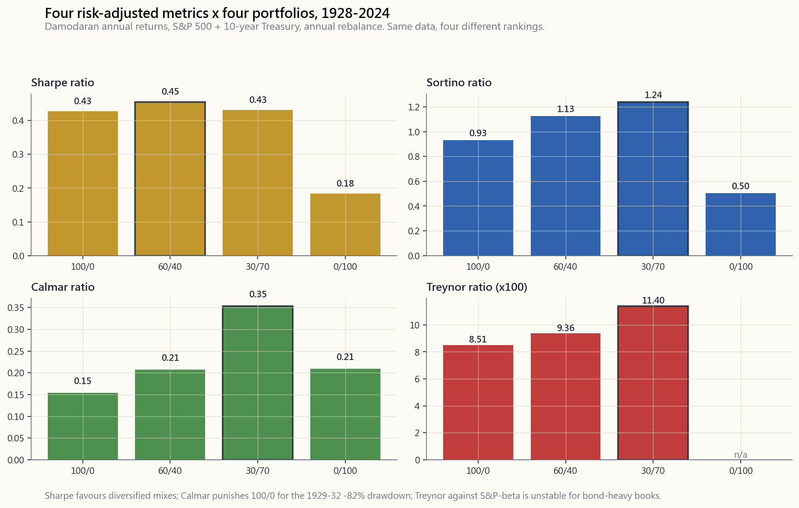
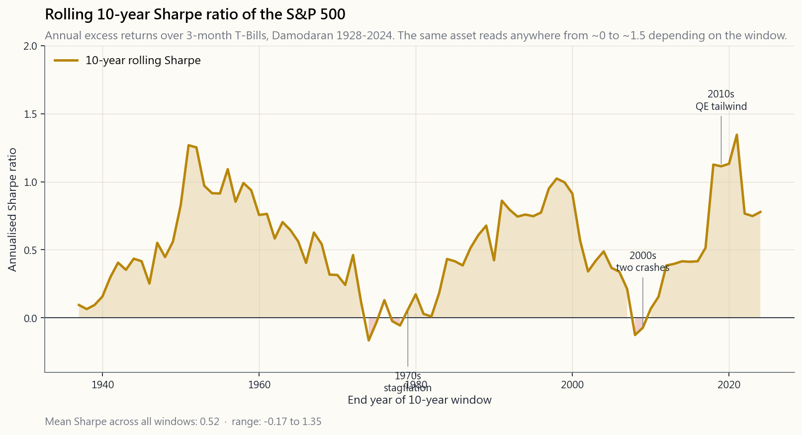

Week 17: Performance Metrics — Sharpe, Sortino, Calmar, IR, Treynor, Alpha and Beta
1. Why This Is Important
A return number on its own is almost useless. "I made 18% last year" is a sentence; it is not an evaluation. It tells you nothing about how much risk was taken to earn it, how often the strategy lost money, or whether the same dollar in an index fund would have done better. Professional investors, allocators, due-diligence teams, and honest self-assessing retail investors all live in the world of risk-adjusted return — return per unit of something painful.
You need this material for four reasons.
planet quotes Sharpe, max drawdown, and tracking error. If you cannot read those numbers and intuit what they mean — what a Sharpe of 0.4 versus 1.2 actually feels like in client account statements — you will overpay for mediocre managers and miss genuinely good ones.
you took less than 30% in vol to get it, and only if you can show it was not pure beta to a 30% market. Without Sharpe, Sortino, alpha, and beta, your year-end review is just storytelling.
default but it punishes upside vol the same as downside. Calmar focuses on the worst pain. IR tells you whether your active bets actually paid. Treynor looks only at the systematic risk you could not diversify away. Each metric answers a different question; using the wrong one gives you the wrong answer.
assumes returns are normally distributed. They are not. Tails are fat. So Sharpe consistently under-penalises strategies that quietly accumulate left-tail risk. Sortino and Calmar partially fix that. Knowing which metric flatters which strategy is most of the alpha in due diligence.
This lesson works through the whole taxonomy, runs every metric on the Damodaran 1928-2024 dataset for four model portfolios, and shows you how the rank order across metrics can reorder your preferences.
2. What You Need to Know
2.1 The Sharpe Ratio — Excess Return per Unit of Total Volatility
The Sharpe ratio is the foundation. Bill Sharpe (Nobel 1990) wrote it down in 1966. The formula is simple:
$$ \text{Sharpe} = \frac{R_p - R_f}{\sigma_p} $$
Numerator: the excess return — your portfolio's return minus the risk-free rate (3-month T-Bill). Denominator: the **total standard deviation** of your portfolio's returns.
The Sharpe ratio answers: *how much return did this portfolio earn per unit of total volatility?* Higher is better. A few rough benchmarks for annualised Sharpe over a long horizon:
| Sharpe (annualised) | Interpretation |
|---|---|
| < 0 | Lost to the risk-free rate. Negative compensation for risk. |
| 0.0 - 0.3 | Mediocre. The S&P 500 averages about 0.4 over a century. |
| 0.3 - 0.6 | Decent. Most balanced portfolios live here. |
| 0.6 - 1.0 | Genuinely good — if real and persistent. |
| 1.0 - 2.0 | Excellent. Top quartile hedge funds, well-run risk parity. |
| > 2.0 | Suspicious. Either short data window, hidden tail risk, or fraud. |
Two important practical points.
The frequency rescaling trap. Sharpe is normally quoted annualised. If you compute it from monthly returns, you must multiply by $\sqrt{12}$, not 12. From daily, by $\sqrt{252}$. This follows from the assumption that monthly returns are independent — which they are not, exactly, but the convention has stuck. A strategy with a monthly Sharpe of 0.30 has an annualised Sharpe of $0.30 \times \sqrt{12} \approx 1.04$, not 3.6.
The vol-tail problem. Sharpe uses $\sigma$, which assumes returns are roughly symmetric around the mean. They are not. 1987's -22% Black Monday was a 20-sigma event under a normal model — meaning it should not have happened in the lifetime of the universe. Yet there it was. So Sharpe systematically rewards strategies that look smooth most of the time but blow up rarely (short volatility, illiquid credit, leveraged carry). The volatility tail wags the dog — do not pick managers on Sharpe alone.
2.2 Sortino — Downside Deviation Only
The Sortino ratio is Sharpe's first repair. It replaces total volatility with downside deviation only: the standard deviation of returns below a target, usually zero or the risk-free rate.
$$ \text{Sortino} = \frac{R_p - R_f}{\sigma_d} \quad \text{where} \quad \sigma_d = \sqrt{\frac{1}{N}\sum_{r_i < t}(r_i - t)^2} $$
By design, upside volatility no longer hurts your score — only losses do. For a positively-skewed strategy (lots of small losses, occasional big gains; trend-following is the classic example) the Sortino ratio is materially higher than Sharpe. For a negatively- skewed strategy (selling vol, picking up nickels in front of a steam-roller) Sortino is closer to or worse than Sharpe.
A useful rule of thumb: when Sortino is at least 1.4× Sharpe, the strategy has positive skew and the manager is genuinely managing downside. When Sortino is barely higher than Sharpe, the return distribution is symmetric or worse — left tail and right tail look similar, and the manager is just running risk.
2.3 Calmar — Return per Unit of Worst-Case Pain
Calmar is the cleanest answer to: *what is my return divided by my worst draw-down?*
$$ \text{Calmar} = \frac{\text{Annualised return}}{|\text{Max drawdown}|} $$
If a strategy returns 12% annualised and the worst peak-to-trough draw was 30%, Calmar is 0.40. Calmar values above 0.5 are good; above 1.0 is rare and excellent over a long sample. The S&P 500 since 1928 has a Calmar of roughly 0.10 (≈10% return / ≈86% 1929-32 drawdown).
The strength of Calmar: it focuses on a single number every investor actually cares about — the worst loss they would have sat through. The weakness: it depends on the sample window. A strategy launched in 2010 that never met its 2008 has a flattering Calmar; a strategy whose track record happens to start right before a crisis looks worse than it is. Always ask: *does this Calmar include the worst available regime?*
2.4 Information Ratio — Active Return per Unit of Tracking Error
For an active manager — one who claims to beat a specific benchmark — Sharpe alone is insufficient. The right question is: *per unit of how much you deviate from the benchmark, how much extra return do you produce?*
The Information Ratio:
$$ \text{IR} = \frac{R_p - R_b}{\sigma(R_p - R_b)} = \frac{\text{Active return}}{\text{Tracking error}} $$
Numerator: the active return (your return minus the benchmark's return). Denominator: the tracking error (standard deviation of the difference). A closet-indexer with low tracking error and a small positive active return can have a high IR; a wild stock- picker with both large active return and large tracking error can have a mediocre one.
Industry shorthand:
- IR < 0.0: Worse than the benchmark. Fire the manager.
- IR = 0.5: Top quartile institutional active manager.
- IR = 1.0: Top decile. Genuinely great.
- IR > 2.0: Vanishingly rare; demand to see the strategy in detail.
2.5 Treynor — Excess Return per Unit of Beta
Sharpe divides by total risk. Treynor divides only by systematic risk — the part you cannot diversify away:
$$ \text{Treynor} = \frac{R_p - R_f}{\beta_p} $$
where $\beta_p$ is the slope of your portfolio's returns regressed on the market's. A diversified equity sub-portfolio with $\beta = 1$ and 12% excess return has Treynor 0.12. A market-neutral fund with $\beta \approx 0$ produces a divide-by-near-zero — Treynor is undefined or infinite, which is a clue Treynor is the wrong metric for hedged strategies.
Use Treynor when you are evaluating a sub-portfolio inside a larger book — for example, deciding whether the 40% of your equity sleeve that is in tech is earning enough for its market exposure, ignoring its idiosyncratic noise that diversifies away at the parent level. Use Sharpe when you are evaluating a stand-alone investment.
2.6 Jensen's Alpha and Beta — From the CAPM Regression
Beta and alpha both come out of the same equation: the CAPM regression of excess returns:
$$ R_p - R_f = \alpha + \beta (R_m - R_f) + \varepsilon $$
Run that regression on your monthly returns versus the S&P 500's, and:
- $\beta$ is the slope. It tells you how much your portfolio
- $\alpha$ is the intercept. It is what you earned above the
A few honest realities:
from zero. Alpha is rare. Treat any alpha estimate from fewer than 60 monthly observations as extremely noisy.
If $\beta = 1.4$, your "stock pick" is really 1.4× S&P leverage plus some noise; the size of that lever explains most of what is happening to the equity curve.
be persistent because of an undisclosed factor exposure (small-cap, value, low-vol, momentum). Modern attribution strips those out before declaring "alpha".
The interactive at the end of this lesson lets you draw the CAPM scatter live: portfolio monthly excess returns vs S&P 500 excess returns, with $\alpha$ as the intercept and $\beta$ as the slope.
2.7 The Metrics Disagree, On Purpose
The whole reason there are five-plus ratios is that **they emphasise different parts of the return distribution**. The chart below runs Sharpe, Sortino, Calmar, and Treynor on four canonical portfolios using Damodaran 1928-2024:

Notice: by Sharpe, the 60/40 mix scores highest because the correlation discount on volatility (Week 4) lifts the denominator's denominator. By Calmar, all-bonds wins because the bond series' worst drawdown over the sample is shallower than the 1929-32 stock loss. By Treynor, the all-stock portfolio looks fine because beta =1 by construction — but Treynor on the bond portfolio is calculated against equity beta and looks unreliable. Same data, four different rankings.
This is not a bug. It is the entire point. A defensible portfolio review reports at least three metrics and explains where they agree and where they disagree.
2.8 Sharpe Through Time — The Regime Story
Even for a single asset, the Sharpe ratio is not a constant. Below is the rolling 10-year Sharpe of the S&P 500 (excess over 3-month T-Bills) since 1937:

The line is wild. In the 1970s, a 10-year window earning roughly zero excess over T-Bills produced a Sharpe near 0.0. In the 1980s-1990s tailwind, Sharpe climbed past 1.0. The 2000s double-decade-of-disappointment (dot-com + GFC) cratered it back toward zero. The 2010s rebuilt it to ~1.5 on the back of QE-driven multiple expansion.
The takeaway: be very careful when someone quotes "the long-run Sharpe of the S&P 500 is X." It is X over the chosen window. The 1980-2020 regime was anomalous — and so was its Sharpe.
3. Common Misconceptions
long-horizon, capacity-bearing Sharpes above ~1.2 are rare. A short-window Sharpe of 2 usually decomposes into either selection bias (the survivors), short data (overfit), or hidden tail risk (about to blow up).
excess return per unit of measured risk. If the risk measure (standard deviation) misses fat tails, the apparent Sharpe lies — the volatility tail wags the dog.
drawdowns."** Calmar is sample-dependent. A strategy with no crisis in its track record has artificially high Calmar. The right comparison is Calmar over a common window including stress periods.
skill. A leveraged long-only equity book with no risk management has a high Sortino in any sustained bull market.
regressed on*. A "low-beta" stock with $\beta=0.4$ to the S&P 500 may have $\beta=2$ to oil prices. The beta you compute depends entirely on the chosen market index.
return given the chosen factor model*. If your model omits small-cap, value, momentum, or quality, you will read off alpha that is really just a known factor premium. Most "alpha" in academic backtests pre-1995 has since been shown to be omitted-factor exposure.
— Sharpe is total excess over total vol. IR is active excess over tracking error. A manager with low IR but high Sharpe is just running market beta.
Treynor only makes sense when the portfolio is part of a larger diversified book where idiosyncratic risk genuinely diversifies away. For a stand-alone retirement account, Sharpe is the correct metric.
$\sqrt{12}$. Multiplying by 12 inflates Sharpe by a factor of 3.46 and is a classic résumé fraud signal.
Risk-adjusted return matters for picking among strategies of similar absolute return. But a 0.6 Sharpe at 12% return grows your wealth far more than a 1.2 Sharpe at 4% return. Real wealth is built on the absolute return; Sharpe just helps you choose between two paths to the same end.
4. Q&A Section
Q1. Which metric should I quote first when describing a fund? A1. Sharpe is still the default and the easiest for a literate audience to interpret. Pair it with max drawdown and one of {Sortino, Calmar} so the reader can spot fat-tail strategies. Quoting only Sharpe in 2026 is a yellow flag.
Q2. What risk-free rate do I use? A2. For US-dollar-denominated portfolios, the 3-month T-Bill yield matched in time to your return series. Damodaran's annual table includes this column. Annualised series use the year-end T-Bill; monthly series use the prevailing T-Bill divided by 12.
Q3. My monthly Sharpe is 0.4, my annualised is 1.4. Why the gap? A3. Annualised Sharpe = monthly Sharpe × √12 = 0.4 × 3.46 = 1.39. That is correct.
Q4. How long a window do I need before Sharpe is meaningful? A4. At minimum 3 years (36 monthly observations). Below that, the standard error of Sharpe is so large the number is essentially random. Five to ten years is typical for institutional allocation decisions.
Q5. What if my portfolio has no market beta — is Treynor useful? A5. No. Treynor with $\beta \approx 0$ is mathematically unstable (divide by near-zero). Use Sharpe and Calmar for market-neutral strategies. Treynor is for sub-portfolios with clear directional market exposure.
Q6. Sortino > Sharpe. Should I always prefer high Sortino strategies? A6. Probably yes — but only if you confirm the sample includes a real drawdown event. A trend-following strategy looks fantastic on Sortino during a sustained trend; the test is how it does in a choppy, mean-reverting regime.
Q7. Why do hedge funds quote IR more than Sharpe? A7. Because hedge fund LPs typically benchmark them against an index (long-short equity vs. S&P 500, market-neutral vs. T-Bills, etc.). IR is the natural metric for "did your active risk pay?" Sharpe answers a different question: "did your absolute return compensate me for absolute volatility?"
Q8. Can a portfolio have positive alpha but a negative Sharpe? A8. Yes, in stress periods. Alpha just measures unexplained excess over CAPM. If the market and your portfolio both lose money, but yours loses *less than CAPM said you should have lost given your beta*, alpha is positive while raw Sharpe is negative. 2008 Treasury managers had this experience.
Q9. How do I compute beta for a long-short portfolio? A9. Same regression: monthly excess returns of the portfolio versus monthly excess returns of the S&P 500. The slope is your net beta. Gross beta (sum of long beta + short beta absolute values) is a separate exposure measure for risk attribution.
**Q10. The risk-free rate has been near zero for a decade. Does that distort Sharpe?** A10. It inflates it. With $R_f \approx 0$, raw return equals excess return, so Sharpe rises mechanically when rates fall. To compare across regimes, always use the contemporaneous T-Bill rate, not a constant assumption.
Q11. Why does the rolling Sharpe of the S&P 500 swing so wildly? A11. Because both numerator and denominator move with the regime. In low-vol bull markets (1990s, 2010s) the numerator is high and denominator low — Sharpe explodes. In stagflation (1970s) or crisis decades (2000s) numerator collapses and denominator rises — Sharpe craters. Regime drives almost everything in quoted single-number stats.
Q12. What single number would Horace use to grade his own year? A12. Two numbers, not one: realised CAGR and max intra-year drawdown. Then a sanity check: Sharpe over 3-year and 10-year rolling windows to see whether the year was on-trend or a fluke. "Risk-adjusted return" in a single ratio is always partial.
第17週：績效指標——夏普比率、索提諾比率、Calmar比率、信息比率、特雷諾比率、阿爾法與貝塔
1. 為何這至關重要
單看回報數字幾乎毫無意義。「我去年賺了18%」只是一句陳述，並非一個評估。它告訴你的，既不是為賺取這個回報承擔了多少風險，也不是這個策略虧損的頻率，更無從得知同一筆錢放進指數基金會否表現更佳。專業投資者、資產配置者、盡職調查團隊，以及能誠實評估自己的散戶投資者，都活在風險調整後回報的世界裡——即每承受一份痛苦所換來的回報。
你需要掌握這些內容，原因有四。
本課將系統梳理整個指標體系，以Damodaran 1928至2024年的數據集對四個模型投資組合逐一計算每個指標，並展示各指標的排名如何改變你的偏好順序。
2. 你需要掌握的知識
2.1 夏普比率——每單位總波動性的超額回報
夏普比率是一切的基礎。比爾·夏普（1990年諾貝爾獎得主）於1966年提出這個公式，其計算方法簡單直接：
$$ \text{夏普比率} = \frac{R_p - R_f}{\sigma_p} $$
分子：超額回報——你的投資組合回報減去無風險利率（3個月國債）。分母：你的投資組合回報的總標準差。
夏普比率回答的問題是：這個投資組合每承受一單位總波動性，賺取了多少回報？ 數值越高越好。以下是長期年化夏普比率的粗略參考基準：
| 年化夏普比率 | 解讀 |
|---|---|
| < 0 | 跑輸無風險利率。承擔風險卻獲得負回報。 |
| 0.0 - 0.3 | 一般。標普500百年平均約為0.4。 |
| 0.3 - 0.6 | 尚可。大多數平衡型投資組合處於此區間。 |
| 0.6 - 1.0 | 真正優秀——若屬真實且持續。 |
| 1.0 - 2.0 | 出色。頂尖四分位的對沖基金、管理完善的風險平價策略。 |
| > 2.0 | 可疑。可能是數據窗口過短、隱藏尾部風險，或涉及欺詐。 |
有兩個重要的實際操作要點。
頻率換算的陷阱。 夏普比率通常以年化形式引用。若以月度回報計算，必須乘以$\sqrt{12}$，而非12。若以日度數據計算，則乘以$\sqrt{252}$。這源於月度回報相互獨立的假設——儘管現實並非完全如此，但這個慣例已沿用至今。一個月度夏普比率為0.30的策略，其年化夏普比率為$0.30 \times \sqrt{12} \approx 1.04$，而非3.6。
波動性尾部問題。 夏普比率使用$\sigma$，假設回報大致圍繞均值對稱分佈，但現實並非如此。1987年黑色星期一的-22%跌幅，在正態模型下屬於20個標準差的事件——意味著理論上在宇宙的壽命內都不應發生。然而它就這樣發生了。因此，夏普比率對那些平時走勢平穩、但偶爾暴倉的策略（沽出波動性、流動性不足的信貸工具、高槓桿套息交易）持續給予過高評價。波動性尾部主宰一切——切勿單靠夏普比率篩選基金經理。
2.2 索提諾比率——僅計算下行偏差
索提諾比率是對夏普比率的首次修正。它以下行偏差取代總波動性：即回報跌破某個目標值（通常為零或無風險利率）時的標準差。
$$ \text{索提諾比率} = \frac{R_p - R_f}{\sigma_d} \quad \text{其中} \quad \sigma_d = \sqrt{\frac{1}{N}\sum_{r_i < t}(r_i - t)^2} $$
在設計上，上行波動性不再拉低你的得分——只有虧損才有影響。對於正偏態的策略（小額虧損頻繁、偶爾大幅獲利；趨勢跟蹤是典型例子），索提諾比率會大幅高於夏普比率。對於負偏態的策略（沽出波動性、在壓路機前撿硬幣），索提諾比率與夏普比率相近甚至更差。
一個實用的經驗法則：當索提諾比率至少為夏普比率的1.4倍時，該策略具有正偏態，基金經理確實在管理下行風險。當索提諾比率與夏普比率相差無幾時，回報分佈呈對稱或更差的形態——左尾與右尾相似，基金經理只是在承擔風險而已。
2.3 Calmar比率——每單位最壞虧損的回報
Calmar比率對以下問題給出最直接的答案：我的回報除以最大回撤是多少？
$$ \text{Calmar比率} = \frac{\text{年化回報}}{|\text{最大回撤}|} $$
若一個策略年化回報為12%，最壞的由峰至谷跌幅為30%，則Calmar比率為0.40。Calmar比率高於0.5屬良好；在較長樣本期內超過1.0實屬罕見且出色。標普500自1928年以來的Calmar比率約為0.10（約10%回報 / 約86%的1929至1932年回撤）。
Calmar比率的優點：它聚焦於每位投資者真正在意的單一數字——他們須要承受的最大虧損。缺點：它依賴樣本窗口。一個於2010年成立、從未經歷2008年危機的策略，其Calmar比率會被高估；而一個業績記錄恰好從危機前開始的策略，看起來則比實際情況更差。必須問：這個Calmar比率是否涵蓋了最惡劣的市場環境？
2.4 信息比率——每單位追蹤誤差的主動回報
對於一個主動基金經理——聲稱能跑贏特定基準的人——單靠夏普比率並不足夠。正確的問題是：你每偏離基準一個單位，能產生多少超額回報？
信息比率：
$$ \text{信息比率} = \frac{R_p - R_b}{\sigma(R_p - R_b)} = \frac{\text{主動回報}}{\text{追蹤誤差}} $$
分子：主動回報（你的回報減去基準回報）。分母：追蹤誤差（兩者差值的標準差）。一個追蹤誤差低、小幅正向主動回報的「掛羊頭賣狗肉」指數化基金，信息比率可以很高；一個主動回報與追蹤誤差都很大的激進選股者，信息比率可能僅屬一般。
業界慣用標準：
- 信息比率 < 0.0：跑輸基準。應解僱基金經理。
- 信息比率 = 0.5：機構主動基金經理的頂尖四分位水平。
- 信息比率 = 1.0：頂尖十分位。真正出色。
- 信息比率 > 2.0：極為罕見；必須詳細審查策略細節。
2.5 特雷諾比率——每單位貝塔的超額回報
夏普比率除以總風險，特雷諾比率則只除以系統性風險——即無法分散掉的那部分：
$$ \text{特雷諾比率} = \frac{R_p - R_f}{\beta_p} $$
其中$\beta_p$是你的投資組合回報對市場回報的迴歸斜率。一個$\beta = 1$、超額回報12%的多元化股票子投資組合，特雷諾比率為0.12。一個$\beta \approx 0$的市場中性基金，計算結果等同除以接近零的數——特雷諾比率趨於無窮大或無意義，這恰恰提示特雷諾比率並不適用於對沖策略。
當你在一個較大的投資組合內評估某個子投資組合時，應使用特雷諾比率——例如判斷你的股票倉位中科技股部分，是否賺取了足以匹配其市場敞口的回報，同時忽略在母投資組合層面已被分散掉的個別風險。評估獨立投資時，應使用夏普比率。
2.6 詹森阿爾法與貝塔——來自資本資產定價模型迴歸
貝塔與阿爾法均來自同一個方程式：超額回報的資本資產定價模型迴歸：
$$ R_p - R_f = \alpha + \beta (R_m - R_f) + \varepsilon $$
將你的月度回報對標普500的月度回報進行迴歸，即可得出：
- $\beta$是斜率。它告訴你市場每移動一個單位，你的投資組合移動多少。$\beta = 1.2$意味著市場下跌1%，你的投資組合約跌1.2%。
- $\alpha$是截距。它是你超出資本資產定價模型根據你的貝塔敞口所預測回報之上額外賺取的部分。年化後，阿爾法是投資的聖杯。
本課末尾的互動工具讓你即時繪製資本資產定價模型散點圖：投資組合月度超額回報對標普500超額回報，以$\alpha$為截距，$\beta$為斜率。
2.7 各指標存在分歧，這是有意為之
存在五個以上比率的根本原因，是它們各自強調回報分佈的不同部分。下圖以Damodaran 1928至2024年數據，對四個典型投資組合分別計算夏普比率、索提諾比率、Calmar比率與特雷諾比率：
注意：從夏普比率看，60/40組合得分最高，因為相關性折扣降低了波動性（第4週），從而提升了分母的整體表現。從Calmar比率看，全債券組合勝出，因為在此樣本中，債券系列的最大回撤比1929至1932年的股市跌幅更淺。從特雷諾比率看，全股票投資組合表現尚可，因其貝塔值按定義為1——但債券投資組合相對於股票貝塔計算出的特雷諾比率並不可靠。同樣的數據，四種截然不同的排名。
這不是缺陷，而是這個指標體系的全部意義所在。一份嚴謹的投資組合回顧報告，應至少引用三個指標，並解釋各指標在哪裡一致、在哪裡分歧。
2.8 夏普比率的時變性——市況周期的故事
即使對於單一資產，夏普比率也並非一個常數。下圖呈現標普500相對3個月國債的滾動10年夏普比率，時間跨度自1937年至今：
這條曲線波動劇烈。在1970年代，10年窗口的超額回報幾乎為零，夏普比率接近0.0。在1980至1990年代的順風時期，夏普比率攀升至1.0以上。2000年代的雙重失落十年（科網泡沫＋全球金融危機）令其跌回近零。2010年代在量化寬鬆驅動的估值擴張下重建至約1.5。
啟示是：當有人引用「標普500的長期夏普比率為X」時，你應該反問：這是在哪個窗口計算的？ 1980至2020年的市場環境是異常的，其夏普比率同樣如此。
3. 常見誤解
4. 問答環節
問題一：描述一隻基金時，應首先引用哪個指標？ 回答一：夏普比率仍是預設選擇，對有一定金融知識的讀者而言最易理解。搭配最大回撤及索提諾比率或Calmar比率之一，讀者便能識別出積累肥尾風險的策略。在2026年只引用夏普比率是一個警示信號。
問題二：應使用哪個無風險利率？ 回答二：對於以美元計價的投資組合，應使用與你的回報數據在時間上對應的3個月國債收益率。Damodaran的年度數據表格包含此欄。年度數據系列使用年末國債利率；月度數據系列使用當期國債利率除以12。
問題三：我的月度夏普比率為0.4，年化後為1.4，為何差距這麼大？ 回答三：年化夏普比率 = 月度夏普比率 × √12 = 0.4 × 3.46 = 1.39。這是正確的。
問題四：需要多長的數據窗口，夏普比率才具有意義？ 回答四：至少3年（36個月度觀測值）。低於此數量，夏普比率的標準誤差大得驚人，這個數字基本上等同於隨機。機構資產配置決策通常需要5至10年的數據。
問題五：若我的投資組合沒有市場貝塔，特雷諾比率是否有用？ 回答五：不。當$\beta \approx 0$時，特雷諾比率在數學上不穩定（等同除以接近零的數）。對於市場中性策略，應使用夏普比率和Calmar比率。特雷諾比率適用於具有明確方向性市場敞口的子投資組合。
問題六：索提諾比率 > 夏普比率。我是否應始終偏好索提諾比率高的策略？ 回答六：大概率是的——但前提是你確認樣本包含了真實的回撤事件。趨勢跟蹤策略在持續趨勢期間的索提諾比率看起來非常出色；真正的考驗是它在震盪、均值回歸的市況下表現如何。
問題七：為何對沖基金更多引用信息比率而非夏普比率？ 回答七：因為對沖基金的有限合夥人通常以某個指數作為基準（做多做空股票策略對標標普500，市場中性策略對標國債等）。信息比率是回答「你的主動風險是否得到回報」的自然指標。夏普比率回答的是另一個問題：「你的絕對回報是否足以補償我承受的絕對波動性？」
問題八：一個投資組合可以同時有正阿爾法和負夏普比率嗎？ 回答八：可以，在壓力時期尤為如此。阿爾法只衡量超出資本資產定價模型預測之外的超額部分。若市場和你的投資組合同時虧損，但你的虧損少於資本資產定價模型根據你的貝塔所預測的水平，則阿爾法為正，而原始夏普比率卻可能為負。2008年的國債基金經理就有這樣的經歷。
問題九：如何計算一個做多做空投資組合的貝塔？ 回答九：迴歸方法相同：投資組合的月度超額回報對標普500的月度超額回報進行迴歸，斜率即為你的淨貝塔值。總貝塔值（做多貝塔與做空貝塔絕對值之和）是風險歸因中另一個獨立的敞口量度。
問題十：無風險利率接近零已有十年。這是否扭曲了夏普比率？ 回答十：這令夏普比率被高估。當$R_f \approx 0$時，原始回報等同於超額回報，因此當利率下降時，夏普比率機械性地上升。為了在不同市場環境下進行比較，應始終使用當期國債利率，而非固定假設值。
問題十一：為何標普500的滾動夏普比率波動如此劇烈？ 回答十一：因為分子與分母都隨市場環境變動。在低波動性牛市（1990年代、2010年代），分子高企而分母偏低——夏普比率急升。在滯脹（1970年代）或危機十年（2000年代），分子崩塌而分母上升——夏普比率大幅下滑。市場環境幾乎主導了所有被引用的單一數字統計量。
問題十二：陳馬會用哪個單一數字來評估自己一年的表現？ 回答十二：是兩個數字，而非一個：實現的複合年增長率與年內最大回撤。然後作理性核查：3年和10年滾動夏普比率，以判斷這一年是持續趨勢的體現，還是曇花一現。「單一比率的風險調整後回報」永遠是片面的。
第17週：績效指標——夏普比率、索提諾比率、卡爾瑪比率、資訊比率、特雷諾比率、阿爾法與貝塔
1. 為什麼這很重要
單一報酬數字幾乎毫無意義。「我去年賺了18%」只是一句陳述，並不構成評估。它無法告訴你為了賺到這個報酬承擔了多少風險、這套策略虧損的頻率有多高，或者同一筆錢放在指數基金裡是否表現更好。專業投資人、資產配置者、盡職調查團隊，以及誠實審視自身表現的散戶，都活在風險調整後報酬的世界裡——也就是每承受一單位痛苦所換來的報酬。
你需要學習這些內容，有四個原因。
本課程將系統梳理所有指標，對四種模型投資組合套用達摩德仁1928至2024年資料集進行完整計算，並展示不同指標的排名順序如何改變你的偏好判斷。
2. 你需要了解的內容
2.1 夏普比率——每單位總波動性所獲得的超額報酬
夏普比率是一切的基礎。比爾·夏普（1990年諾貝爾獎得主）於1966年提出這個公式，計算方式相當簡單：
$$ \text{夏普比率} = \frac{R_p - R_f}{\sigma_p} $$
分子為超額報酬——投資組合報酬減去無風險利率（3個月期國庫券）。分母為投資組合報酬的總標準差。
夏普比率回答的問題是：這個投資組合每承受一單位的總波動性，賺取了多少報酬？ 數值越高越好。以下是長期年化夏普比率的粗略基準：
| 夏普比率（年化） | 解讀 |
|---|---|
| < 0 | 輸給無風險利率，承擔風險卻得到負補償 |
| 0.0 - 0.3 | 平庸。S&P 500百年平均約為0.4 |
| 0.3 - 0.6 | 尚可。多數平衡型投資組合落在此區間 |
| 0.6 - 1.0 | 確實優秀——若屬真實且持續的表現 |
| 1.0 - 2.0 | 卓越。頂尖四分位的避險基金、管理良善的風險平價策略 |
| > 2.0 | 可疑。不是資料窗口過短，就是隱藏的尾部風險，或是詐欺 |
有兩個重要的實務注意事項。
頻率換算的陷阱。 夏普比率通常以年化方式呈現。若從月報酬計算，必須乘以 $\sqrt{12}$，而非乘以12。從日報酬計算則乘以 $\sqrt{252}$。這源於月報酬彼此獨立的假設——雖然實際上並非完全如此，但業界慣例已沿用至今。月化夏普比率為0.30的策略，年化夏普比率為 $0.30 \times \sqrt{12} \approx 1.04$，而非3.6。
波動性尾部問題。 夏普比率使用 $\sigma$，這隱含報酬大致對稱分佈於平均值的假設，但事實並非如此。依常態模型計算，1987年「黑色星期一」的-22%是一個20個標準差事件——意味著在宇宙壽命內幾乎不可能發生——但它就這樣發生了。因此，夏普比率系統性地偏袒那些平時看似平穩、卻偶爾大幅崩潰的策略（放空波動性、非流動信用、槓桿套利交易）。波動性尾部牽動全局——切勿只憑夏普比率挑選基金經理。
2.2 索提諾比率——僅計算下行偏差
索提諾比率是對夏普比率的第一項修正。它以僅計算下行偏差取代總波動性：即報酬低於目標值（通常為零或無風險利率）的標準差。
$$ \text{索提諾比率} = \frac{R_p - R_f}{\sigma_d} \quad \text{其中} \quad \sigma_d = \sqrt{\frac{1}{N}\sum_{r_i < t}(r_i - t)^2} $$
在設計上，上行波動性不再拖累評分——只有虧損才會。對於正偏態策略（多次小幅虧損、偶有大幅獲利；趨勢跟隨是典型範例），索提諾比率會顯著高於夏普比率。對於負偏態策略（放空波動性、在壓路機前撿硬幣），索提諾比率則接近或低於夏普比率。
一個實用的經驗法則：當索提諾比率至少是夏普比率的1.4倍時，代表策略具有正偏態，且基金經理確實在管理下行風險。當索提諾比率僅略高於夏普比率時，表示報酬分佈對稱甚至偏負——左尾與右尾形狀相似，基金經理不過是在承擔風險而已。
2.3 卡爾瑪比率——每單位最大痛苦所獲得的報酬
卡爾瑪比率對以下問題給出了最簡潔的答案：我的報酬除以最大回撤是多少？
$$ \text{卡爾瑪比率} = \frac{\text{年化報酬}}{|\text{最大回撤}|} $$
若某策略年化報酬12%，歷史最大峰谷回撤為30%，則卡爾瑪比率為0.40。卡爾瑪比率高於0.5屬於優良；在長期樣本中高於1.0極為罕見且卓越。S&P 500自1928年以來的卡爾瑪比率約為0.10（約10%報酬 / 約86%的1929-32年回撤）。
卡爾瑪比率的優勢在於：它聚焦於每位投資人真正在乎的單一數字——他們需要撐過的最大虧損。劣勢在於：它取決於樣本窗口。2010年成立、從未經歷2008年的策略，卡爾瑪比率會顯得過度亮眼；而績效紀錄恰好從危機前開始的策略，看起來則比實際更差。務必追問：這個卡爾瑪比率是否涵蓋了最惡劣的市場環境？
2.4 資訊比率——每單位追蹤誤差所獲得的主動報酬
對於聲稱能超越特定基準的主動型基金經理，單憑夏普比率並不足夠。正確的問題是：每承受一單位偏離基準的風險，你能創造多少額外報酬？
資訊比率的公式為：
$$ \text{資訊比率} = \frac{R_p - R_b}{\sigma(R_p - R_b)} = \frac{\text{主動報酬}}{\text{追蹤誤差}} $$
分子為主動報酬（你的報酬減去基準報酬）。分母為追蹤誤差（兩者差值的標準差）。一位追蹤誤差低、主動報酬小幅正值的假指數化基金經理，可能擁有較高的資訊比率；而一位主動報酬與追蹤誤差都很大的激進選股者，資訊比率反而可能平庸。
業界速查標準：
- 資訊比率 < 0.0：表現遜於基準，解僱基金經理。
- 資訊比率 = 0.5：機構主動型基金經理的頂尖四分位水準。
- 資訊比率 = 1.0：頂尖十分位，真正優秀。
- 資訊比率 > 2.0：極為罕見，務必深入了解策略細節。
2.5 特雷諾比率——每單位貝塔所獲得的超額報酬
夏普比率除以總風險，特雷諾比率則只除以系統性風險——即無法透過分散投資消除的部分：
$$ \text{特雷諾比率} = \frac{R_p - R_f}{\beta_p} $$
其中 $\beta_p$ 是將投資組合報酬對市場報酬進行迴歸所得的斜率。一個 $\beta = 1$、超額報酬12%的分散股票子投資組合，特雷諾比率為0.12。市場中性基金的 $\beta \approx 0$，導致除以接近零的數，特雷諾比率無意義或趨近無窮大——這提示你特雷諾比率並不適合避險策略。
當你在評估較大投資帳簿中的子投資組合時使用特雷諾比率——例如判斷股票部位中40%的科技股是否賺取了足夠的市場曝險補償，同時忽略在母部位層級已分散掉的非系統性波動。當你評估獨立投資時，則應使用夏普比率。
2.6 詹森阿爾法與貝塔——源自資本資產定價模型迴歸
貝塔與阿爾法都來自同一條方程式：超額報酬的資本資產定價模型迴歸：
$$ R_p - R_f = \alpha + \beta (R_m - R_f) + \varepsilon $$
將你的月報酬對S&P 500月報酬進行迴歸，即可得到：
- $\beta$ 為斜率。它告訴你市場每波動一單位，你的投資組合會移動多少。$\beta = 1.2$ 意味著市場下跌1%，你大約下跌1.2%。
- $\alpha$ 為截距。它代表你的超越部分——超過資本資產定價模型依據你所承擔的貝塔曝險所預期報酬的額外收益。以年化計算，阿爾法是聖杯。
本課末尾的互動工具可讓你即時繪製資本資產定價模型散點圖：投資組合月超額報酬對S&P 500月超額報酬，其中 $\alpha$ 為截距，$\beta$ 為斜率。
2.7 各指標的分歧，是刻意設計的結果
之所以存在五個以上的比率，是因為它們各自強調報酬分佈的不同面向。下方圖表以達摩德仁1928至2024年資料，對四種典型投資組合分別計算夏普比率、索提諾比率、卡爾瑪比率與特雷諾比率：
請注意：以夏普比率衡量，60/40組合得分最高，因為波動性的相關性折扣（第4週）提升了分母效果。以卡爾瑪比率衡量，全債券組合勝出，因為在樣本期間內，債券的最大回撤比1929至32年的股票損失更淺。以特雷諾比率衡量，全股票投資組合看起來表現尚可，因為貝塔在定義上等於1——但債券投資組合的特雷諾比率以股票貝塔計算，結果並不可靠。相同資料，四種不同排名。
這不是缺陷，而是全部的重點所在。一份有說服力的投資組合評估報告，至少應呈現三個指標，並說明它們在哪些地方一致、在哪些地方分歧。
2.8 夏普比率隨時間的變化——市場環境的故事
即使是同一資產，夏普比率也並非常數。下圖為S&P 500相對3個月期國庫券的滾動10年夏普比率，自1937年至今：
這條曲線波動劇烈。在1970年代，10年窗口的超過國庫券報酬約為零，夏普比率接近0.0。在1980至1990年代的順風期，夏普比率攀升至1.0以上。2000年代的雙重失落十年（科技泡沫加上全球金融海嘯）將其推回接近零。2010年代在量化寬鬆驅動的本益比擴張下，重新回升至約1.5。
結論：當有人引用「S&P 500的長期夏普比率為X」時，務必追問：這是哪個窗口期的X。 1980至2020年的環境屬於異常——其夏普比率亦然。
3. 常見迷思
4. 問答章節
Q1. 描述一檔基金時，應該優先引用哪個指標？ A1. 夏普比率仍是預設選項，對有基礎的讀者而言最易理解。搭配最大回撤，以及索提諾比率或卡爾瑪比率擇一，讓讀者能辨識厚尾策略。2026年還只引用夏普比率，是個黃色警示訊號。
Q2. 應該使用什麼無風險利率？ A2. 對美元計價的投資組合而言，使用與報酬序列時間對應的3個月期國庫券殖利率。達摩德仁的年度資料表中包含此欄位。年化序列使用年末國庫券利率；月化序列使用當期國庫券利率除以12。
Q3. 我的月化夏普比率是0.4，年化是1.4，為何差距這麼大？ A3. 年化夏普比率 = 月化夏普比率 × √12 = 0.4 × 3.46 = 1.39，這是正確的結果。
Q4. 夏普比率要有多長的窗口才有意義？ A4. 至少3年（36個月度觀測值）。低於此數，夏普比率的標準誤差大到數字幾乎沒有意義。機構資產配置決策通常要求5至10年的樣本。
Q5. 若我的投資組合幾乎沒有市場貝塔，特雷諾比率有用嗎？ A5. 沒有。$\beta \approx 0$ 時的特雷諾比率在數學上不穩定（除以接近零的數）。對市場中性策略，應使用夏普比率和卡爾瑪比率。特雷諾比率適用於具有明確方向性市場曝險的子投資組合。
Q6. 索提諾比率 > 夏普比率，我是否應該總是偏好索提諾比率高的策略？ A6. 可能是——但前提是確認樣本包含真實的回撤事件。趨勢跟隨策略在持續趨勢中的索提諾比率看起來很漂亮；真正的考驗是在震盪均值回歸的環境下表現如何。
Q7. 為何避險基金引用資訊比率多於夏普比率？ A7. 因為避險基金的有限合夥人通常以指數為基準（股票多空對照S&P 500，市場中性對照國庫券等）。資訊比率是回答「你的主動風險是否得到了回報？」的自然指標。夏普比率回答的是不同問題：「你的絕對報酬是否補償了我所承受的絕對波動性？」
Q8. 投資組合可以有正阿爾法但負夏普比率嗎？ A8. 可以，在壓力時期就會如此。阿爾法只衡量超越資本資產定價模型預期的部分。若市場和你的投資組合都在虧損，但你虧損的幅度小於依據貝塔所預期的虧損，阿爾法為正，但原始夏普比率為負。2008年的國庫券管理人就有這樣的經驗。
Q9. 如何計算多空投資組合的貝塔？ A9. 使用相同的迴歸方式：投資組合的月超額報酬對S&P 500的月超額報酬進行迴歸，斜率即為你的淨貝塔。總貝塔（多頭貝塔與空頭貝塔絕對值的總和）是風險歸因中的另一項曝險衡量指標。
Q10. 無風險利率近十年接近於零，這會扭曲夏普比率嗎？ A10. 會使其膨脹。當 $R_f \approx 0$ 時，原始報酬約等於超額報酬，因此利率下降時夏普比率機械性地上升。若要跨環境比較，務必使用當期國庫券利率，而非固定假設值。
Q11. 為何S&P 500的滾動夏普比率波動如此劇烈？ A11. 因為分子與分母都隨市場環境移動。在低波動性的多頭市場（1990年代、2010年代），分子高、分母低——夏普比率大幅攀升。在停滯性通膨（1970年代）或危機十年（2000年代），分子崩潰、分母上升——夏普比率跌落谷底。市場環境幾乎決定了所有單一數字統計量。
Q12. 陳馬會用哪個單一數字評估自己的年度表現？ A12. 兩個數字，而非一個：實現的年複合成長率與年內最大回撤。再做一個合理性檢查：3年與10年滾動夏普比率，以判斷這一年是趨勢延續還是曇花一現。「風險調整後報酬」以單一比率呈現，永遠是片面的。
第17周：业绩指标——夏普比率、索提诺比率、卡玛比率、信息比率、特雷诺比率、阿尔法与贝塔
1. 为何这一内容至关重要
单独的收益数字几乎毫无意义。"我去年赚了18%"只是一句陈述，而非一个评价。它没有告诉你为了获得这一收益承担了多少风险，策略亏损的频率，或者同样的本金投入指数基金会不会表现更好。专业投资者、资产配置人、尽职调查团队，以及能够客观评估自身的个人投资者，都生活在风险调整后收益的世界里——即每承担一单位"痛苦"所获得的回报。
学习这一内容有四个理由。
本课将梳理完整的指标体系，对四个模型投资组合在达摩达兰1928—2024年数据集上运行每个指标，并展示不同指标的排名如何颠覆你的选择偏好。
2. 你需要掌握的内容
2.1 夏普比率——每单位总波动性的超额收益
夏普比率是一切的基础。比尔·夏普（1990年诺贝尔奖得主）于1966年提出这一公式，计算方法简单明了：
$$ \text{夏普比率} = \frac{R_p - R_f}{\sigma_p} $$
分子：超额收益——你的投资组合收益率减去无风险利率（3个月国债）。分母：你的投资组合收益率的总标准差。
夏普比率回答的问题是：该投资组合每承担一单位总波动性，获得了多少收益？ 数值越高越好。以下是长期年化夏普比率的粗略参考基准：
| 夏普比率（年化） | 解读 |
|---|---|
| < 0 | 跑输无风险利率，承担风险却得到负补偿。 |
| 0.0 - 0.3 | 平庸。标普500指数过去一个世纪平均约为0.4。 |
| 0.3 - 0.6 | 尚可。大多数均衡型投资组合处于此区间。 |
| 0.6 - 1.0 | 真正优秀——若确实真实且持续。 |
| 1.0 - 2.0 | 卓越。排名前四分之一的对冲基金、运营良好的风险平价策略。 |
| > 2.0 | 存疑。要么数据窗口过短，要么隐藏尾部风险，要么存在欺诈。 |
以下两点在实践中尤为重要。
频率换算陷阱。 夏普比率通常以年化形式呈现。如果你从月度收益计算，必须乘以$\sqrt{12}$，而非12。从日度收益计算，则乘以$\sqrt{252}$。这基于月度收益相互独立的假设——虽然并不完全成立，但这一惯例已广泛采用。月度夏普比率为0.30的策略，年化夏普比率为$0.30 \times \sqrt{12} \approx 1.04$，而非3.6。
肥尾问题。 夏普比率使用$\sigma$，即假设收益大致围绕均值对称分布。而实际并非如此。1987年"黑色星期一"的-22%在正态模型下属于20个标准差的事件——意味着在宇宙的寿命内都不应该发生，然而它确实发生了。因此，夏普比率会系统性地奖励那些平时表现平稳、偶发暴雷的策略（做空波动性、流动性差的信用资产、带杠杆的套利）。波动性的尾部左右全局——切勿仅凭夏普比率来挑选管理人。
2.2 索提诺比率——仅考虑下行偏差
索提诺比率是对夏普比率的第一次修正。它用仅计算下行偏差取代总波动性：即收益率低于目标值（通常为零或无风险利率）时的标准差。
$$ \text{索提诺比率} = \frac{R_p - R_f}{\sigma_d} \quad \text{其中} \quad \sigma_d = \sqrt{\frac{1}{N}\sum_{r_i < t}(r_i - t)^2} $$
从设计上看，上行波动性不再拉低你的得分——只有亏损才会。对于正偏态策略（大量小亏损、偶发大盈利；趋势跟踪是典型案例），索提诺比率将明显高于夏普比率。对于负偏态策略（做空波动性、在压路机前捡硬币），索提诺比率与夏普比率相近甚至更低。
一条实用经验法则：当索提诺比率至少是夏普比率的1.4倍时，该策略具有正偏态，管理人确实在管控下行风险。当索提诺比率与夏普比率相差无几时，收益分布是对称的甚至更差——左尾和右尾形态相似，管理人只是在承担风险而已。
2.3 卡玛比率——每单位最大痛苦所获得的收益
卡玛比率对以下问题给出了最简洁的回答：我的收益除以最大回撤是多少？
$$ \text{卡玛比率} = \frac{\text{年化收益率}}{|\text{最大回撤}|} $$
如果一个策略年化收益率为12%，历史最大峰谷回撤为30%，则卡玛比率为0.40。卡玛比率高于0.5属于良好水平；在较长样本期内高于1.0则属罕见且卓越。标普500指数自1928年以来的卡玛比率约为0.10（约10%收益率/约86%的1929—1932年回撤）。
卡玛比率的优势在于：它聚焦于每位投资者真正关心的单一数字——他们所经历的最大亏损。其弱点在于：它取决于样本窗口。一个2010年成立、从未经历2008年危机的策略，卡玛比率会显得虚高；而恰好在危机前开始运行的策略，看起来会比实际更差。务必追问：这个卡玛比率是否包含了最恶劣的市场环境？
2.4 信息比率——每单位跟踪误差的主动收益
对于主动管理人——即声称能够超越特定基准的管理人——单独使用夏普比率是不够的。正确的问题是：每偏离基准一单位，你能产生多少额外收益？
信息比率的计算公式为：
$$ \text{信息比率} = \frac{R_p - R_b}{\sigma(R_p - R_b)} = \frac{\text{主动收益}}{\text{跟踪误差}} $$
分子：主动收益（你的收益率减去基准收益率）。分母：跟踪误差（两者差值的标准差）。跟踪误差低、主动收益小幅为正的"隐形指数基金"可以拥有较高的信息比率；而主动收益高、跟踪误差也高的激进选股者，信息比率可能平平无奇。
行业通行标准：
- 信息比率 < 0.0：跑输基准。应解雇该管理人。
- 信息比率 = 0.5：机构主动管理人的前四分之一水平。
- 信息比率 = 1.0：前十分位，真正卓越。
- 信息比率 > 2.0：极为罕见；务必要求详细了解策略细节。
2.5 特雷诺比率——每单位贝塔的超额收益
夏普比率除以总风险，而特雷诺比率只除以系统性风险——即你无法通过分散投资消除的那部分：
$$ \text{特雷诺比率} = \frac{R_p - R_f}{\beta_p} $$
其中$\beta_p$是你的投资组合收益率对市场收益率进行回归所得到的斜率。一个$\beta = 1$、超额收益为12%的多元化股票子投资组合，特雷诺比率为0.12。$\beta \approx 0$的市场中性基金会产生近似除以零的情况——特雷诺比率无意义或趋向无穷大，这提示特雷诺比率并非适合对冲策略的指标。
当你在一个更大的投资组合内评估某个子投资组合时，应使用特雷诺比率——例如，判断你股票仓位中40%的科技股是否为其市场风险敞口赚取了足够收益，而忽略那些在母组合层面已被分散化消除的非系统性噪音。评估独立投资时，则应使用夏普比率。
2.6 詹森阿尔法与贝塔——来自CAPM回归
贝塔和阿尔法均来自同一个方程：超额收益的CAPM回归：
$$ R_p - R_f = \alpha + \beta (R_m - R_f) + \varepsilon $$
对你的月度收益率与标普500指数月度收益率进行回归，可得：
- $\beta$为斜率，告诉你市场每变动一单位，你的投资组合会变动多少。$\beta = 1.2$意味着市场下跌1%会拖累你下跌约1.2%。
- $\alpha$为截距，即你在CAPM基于贝塔敞口所预测的收益之上额外赚取的部分。年化后的阿尔法是投资者梦寐以求的终极目标。
本课末尾的互动工具允许你实时绘制CAPM散点图：投资组合月度超额收益对标普500超额收益，$\alpha$为截距，$\beta$为斜率。
2.7 指标之间的分歧——有意为之
存在五种以上比率的全部原因在于，它们强调收益分布的不同部分。下图对四个典型投资组合使用达摩达兰1928—2024年数据，分别运行夏普比率、索提诺比率、卡玛比率和特雷诺比率：
注意：从夏普比率看，60/40组合得分最高，因为波动性上的相关性折扣（第4周）提升了分母的分母。从卡玛比率看，全债券组合胜出，因为该样本中债券系列的最大回撤浅于1929—1932年的股票损失。从特雷诺比率对股票贝塔的角度看，全股票投资组合表现尚可，因为贝塔按构造等于1——但债券投资组合的特雷诺比率是基于股票贝塔计算的，结果显得不可靠。数据相同，排名却各异。
这不是缺陷，而恰恰是关键所在。一份可信的投资组合评估报告应至少呈现三个指标，并解释它们在哪些地方一致、在哪些地方存在分歧。
2.8 夏普比率随时间的演变——市场环境的故事
即便对于单一资产，夏普比率也不是一个常数。下图是标普500指数（超过3个月国债）自1937年以来的滚动10年夏普比率：
这条线波动剧烈。1970年代，10年窗口内超额收益约为零，夏普比率接近0.0。1980至1990年代的顺风期，夏普比率攀升至1.0以上。2000年代双重失落的十年（互联网泡沫+金融危机）将其打回接近零的位置。2010年代在量化宽松驱动的估值扩张支撑下，夏普比率又重建至约1.5。
结论：当有人引用"标普500的长期夏普比率是X"时，务必追问：X是在哪个窗口计算的？ 1980—2020年的市场环境是异常的——它的夏普比率同样如此。
3. 常见误区
4. 问答环节
Q1. 介绍基金时，我应该首先引用哪个指标？ A1. 夏普比率仍然是默认选项，也是最易于理解的指标。搭配最大回撤以及索提诺比率或卡玛比率中的一个，使读者能够识别肥尾策略。在2026年仅引用夏普比率是一个警示信号。
Q2. 我应该使用哪个无风险利率？ A2. 对于以美元计价的投资组合，使用与收益率序列在时间上匹配的3个月国债收益率。达摩达兰的年度表格包含此列数据。年度序列使用年末国债利率；月度序列使用当期国债利率除以12。
Q3. 我的月度夏普比率为0.4，年化后为1.4，为什么差距这么大？ A3. 年化夏普比率 = 月度夏普比率 × √12 = 0.4 × 3.46 = 1.39，计算正确。
Q4. 夏普比率有意义，需要多长的时间窗口？ A4. 至少3年（36个月观测值）。低于此水平，夏普比率的标准误差大到数字几乎没有参考价值。机构资产配置决策通常需要5到10年的数据。
Q5. 如果我的投资组合没有市场贝塔，特雷诺比率有用吗？ A5. 没用。$\beta \approx 0$时特雷诺比率在数学上不稳定（近似除以零）。对于市场中性策略，应使用夏普比率和卡玛比率。特雷诺比率适用于具有明确市场方向性敞口的子投资组合。
Q6. 索提诺比率 > 夏普比率，我是否应该总是偏好高索提诺比率的策略？ A6. 大概率是的——但前提是要确认样本包含了真实的回撤事件。趋势跟踪策略在持续趋势行情中，索提诺比率看起来非常漂亮；真正的考验是它在震荡均值回归行情中的表现。
Q7. 为什么对冲基金更多引用信息比率而非夏普比率？ A7. 因为对冲基金的有限合伙人通常以某个指数作为基准（多空股票对标标普500，市场中性对标国债等）。信息比率是回答"你的主动风险是否得到了回报"的自然指标。夏普比率回答的是另一个问题："你的绝对收益是否补偿了我的绝对波动性？"
Q8. 投资组合可能在阿尔法为正的情况下，夏普比率为负吗？ A8. 可以，在压力时期会出现这种情况。阿尔法只衡量超出CAPM预测的部分。如果市场和你的投资组合都在亏损，但你亏损的幅度少于CAPM根据你的贝塔所预测的损失，阿尔法为正而原始夏普比率为负是完全可能的。2008年的国债管理人就经历过这种情况。
Q9. 如何计算多空投资组合的贝塔？ A9. 回归方式相同：投资组合月度超额收益对标普500月度超额收益进行回归，斜率即为净贝塔。总贝塔（多头贝塔加上空头贝塔绝对值之和）是用于风险归因的另一个独立敞口指标。
Q10. 无风险利率近十年接近零，这会扭曲夏普比率吗？ A10. 会导致夏普比率虚高。当$R_f \approx 0$时，原始收益率等于超额收益率，因此利率下降时夏普比率会机械性上升。为了进行跨时期比较，务必使用同期国债利率，而非固定假设值。
Q11. 为什么标普500的滚动夏普比率波动如此剧烈？ A11. 因为分子和分母都随市场环境变化。在低波动性牛市中（1990年代、2010年代），分子高、分母低——夏普比率急剧攀升。在滞胀时期（1970年代）或危机十年（2000年代），分子崩塌、分母上升——夏普比率暴跌。市场环境几乎决定了所有单一数字统计指标的表现。
Q12. 陳馬会用哪个单一数字来评估自己的年度表现？ A12. 两个数字，而非一个：实现的复合年均增长率和年内最大回撤。然后做一个理智检验：观察3年和10年滚动窗口的夏普比率，判断这一年是符合趋势还是昙花一现。"风险调整后收益"用单一比率表达，永远是片面的。